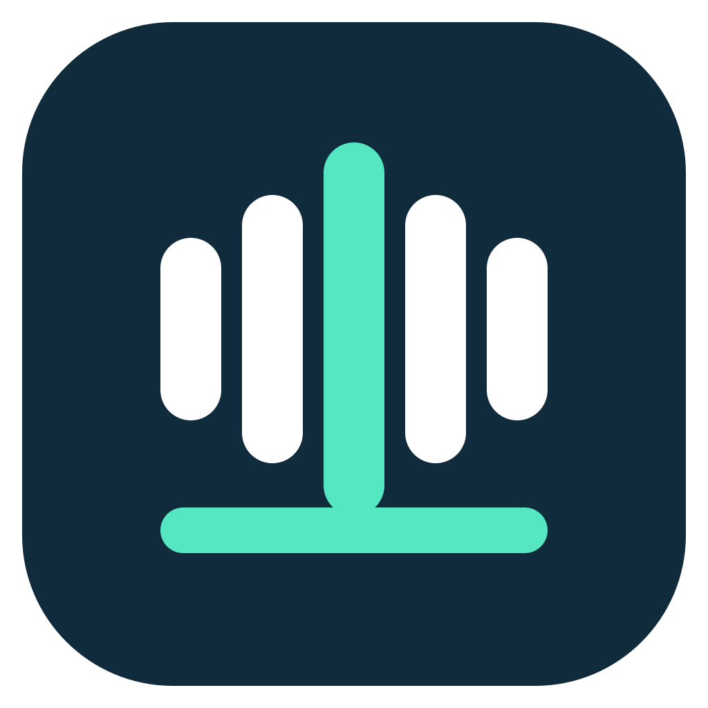

把录音取出来
导入已有音频，或通过 PLAUD 接入流程下载设备录音。无需注册 RecDock 账号即可使用本机录音库。

RecDock开源录音工作台LOCAL FIRST · OPEN SOURCE
从录音设备到一份能回听、能校对、能继续使用的全文。RecDock 把整个流程，放进你的 Mac。
免费 · MIT 开源 · Apple Silicon 优先
界面示意 · 点击时间查看段落定位
ONE CONNECTED WORKFLOW
采访、会议、产品测试。让每一段声音都有可查阅的文字，也保留回到原声的路径。
导入已有音频，或通过 PLAUD 接入流程下载设备录音。无需注册 RecDock 账号即可使用本机录音库。
使用固定版本的本地模型，依次完成语音转写、时间对齐和说话人区分。原始录音始终保留。
点击时间回听，修改文字和讲话人名称，标记已核对段落。机器稿与人工修订分别保存。
导出文本、Markdown 和字幕。也可以通过浏览器扩展，将完整稿件与提示词发送到已登录的 ChatGPT 页面。
RUNS ON YOUR MAC
保留已选定的三个模型与固定修订。模型独立于 App，升级应用时可以继续使用已有模型文件。
模型能力来自相应上游项目；RecDock 负责设备、任务、编辑与桌面运行的工程整合。
模型文件约 3.78 GB首次准备需联网，准备后可离线处理。
MAC FIRST
本机导入、真实模型处理、回听校对和 ChatGPT 全文提交已通过当前 Mac 的联调。首个候选包约 486 MB，模型另行准备；完整安装范围以版本说明为准。
查看候选版本与下载 ↗本机处理流程读取本地录音和模型。只有你主动点击发送到 ChatGPT 时，完整转写与提示词才会发往对应服务，不发送原始音频。
需要网络、足够磁盘空间，以及 pyannote 模型的访问授权。App 提供官方许可入口和下载令牌保存；已有完整模型可以直接选择、校验并使用。
可以导入已有音频使用录音库与处理流程。首个桌面候选版以本机导入体验为主，桌面端 PLAUD 真机回归与干净 Mac 首次安装尚待补齐。
BUILT TO CONNECT
我们希望与录音设备厂商和软件团队交流：设备适配、本地音频处理、现有产品集成，以及跨平台桌面客户端交付。
聊聊你的集成需求 ↗